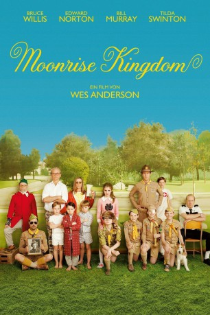

#5975 Moonrise Kingdom
Auszeichnungen: für 1 Oscars nominiert
 
 IMDB-Wertung: 7.8 / 10
IMDB-Wertung: 7.8 / 10  Tomatometer: 93
Tomatometer: 93  Metascore: 0
Metascore: 0 
Moonrise Kingdom spielt auf Rhode Island in den 60er Jahren und erzählt von der erblühenden Liebe zwischen Sam und Suzy. Auf den ersten Blick erkennen die Beiden, dass sie für einander bestimmt sind. Ihre Umgebung sieht dies allerdings anders. Als die Zwei daraufhin von zu Hause weglaufen bzw. die Mitgliedschaft in den Pfadfindern aufkündigen, setzt dies eine irrwitzige Suchaktion des Dorfsheriffs, der lokalen Pfadfindergruppe, angeführt vom Pfadfinderleiter, und der besorgten Eltern Suzys in Gang. Da sich herausstellt, dass Sam eine Waise ist, wird das Sozialamt tätig. Vor der Kulisse eines hereinbrechenden Unwetters spitzt sich die Lage dramatisch zu…
Jahr: 2012
Dauer: 93 Minuten
FSK: 12
Land: USA Studio: Focus FeaturesTonspuren: DTS - ,
Untertitel: Deutsch, Englisch,
Auflösung: 1080p (1920x1040) Größe: 10547 MB
Genre: Drama, Komödie, Abenteuer, Liebe
Regisseur:  Wes Anderson
Wes Anderson
Drehbuch: Hui-Ling Wang
Soundtrack:
Darsteller:
 Bruce Willis als Captain Sharp
Bruce Willis als Captain Sharp Edward Norton als Scout Master Ward
Edward Norton als Scout Master Ward Bill Murray als Mr. Bishop
Bill Murray als Mr. Bishop Frances McDormand als Mrs. Bishop
Frances McDormand als Mrs. Bishop Tilda Swinton als Social Services
Tilda Swinton als Social Services- Jared Gilman als Sam
 Kara Hayward als Suzy
Kara Hayward als Suzy Jason Schwartzman als Cousin Ben
Jason Schwartzman als Cousin Ben Bob Balaban als The Narrator
Bob Balaban als The Narrator Lucas Hedges als Redford
Lucas Hedges als Redford- Charlie Kilgore als Lazy-Eye
- Chandler Frantz als Gadge
- L.J. Foley als Izod
 Gabriel Rush als Skotak
Gabriel Rush als Skotak Seamus Davey-Fitzpatrick als Roosevelt
Seamus Davey-Fitzpatrick als Roosevelt- Tommy Nelson als Nickleby
 Larry Pine als Mr. Billingsley
Larry Pine als Mr. Billingsley Neal Huff als Jed
Neal Huff als Jed Eric Chase Anderson als Secretary McIntire
Eric Chase Anderson als Secretary McIntire Jake Ryan als Lionel
Jake Ryan als Lionel- Tanner Flood als Murray
- Wyatt Ralff als Rudy
- Carolyn Pickman als Mrs. Lynn
- Ada-Nicole Sanger als Sparrow
 Harvey Keitel als Commander Pierce
Harvey Keitel als Commander Pierce- Michael Malvesti als B-B-Q Khaki Scout
- Preston Hatch als Fort Lebanon Khaki Scout
- Alecia Batson als Church Refugee , uncredited
 David Boston als Townsman in Church , uncredited
David Boston als Townsman in Church , uncredited Brina als Den Leader , uncredited
Brina als Den Leader , uncredited Jodie Brunelle als Church Refugee , uncredited
Jodie Brunelle als Church Refugee , uncredited John Franchi als Play Attendee , uncredited
John Franchi als Play Attendee , uncredited- Adam J. Freeman als Khaki Scout , uncredited
- Chris O'Brien als Foster Brother 2 , uncredited
- Christopher S. Porter als Storm Refugee , uncredited
 Gary Roscoe als Townsperson , uncredited
Gary Roscoe als Townsperson , uncredited- Aingea Venuto als Refugee in Church / Water Rippler in Noah's Ark Pageant , uncredited
 George J. Vezina als Scout Master , uncredited
George J. Vezina als Scout Master , uncredited- Mary Wexler als Church Member , uncredited
- James Wilcox als Scout Master , uncredited
- Andreas Sheikh als Panagle
- Rob H. Campbell als Deluca
- Marianna Bassham als Becky
- Max Derderian als Chef
- Hugo DeAscentis als Edgar
- Liz Callahan als Mrs. Billingsley
- James Demler als Noah
- Christine Noel als Noah's Wife
- Jean-Michael Pion als Ham
- John Peet als Junior Khaki Scout Master
Datei: X:\2012(G-M)\Moonrise Kingdom (2012, FSK12, 1920x1040).mkv seit 16.04.2017
Festplatte: HD 2012(A-M)
 Es gibt insgesamt 112 Filme in der Gruppe '2012(G-M)'
Es gibt insgesamt 112 Filme in der Gruppe '2012(G-M)'